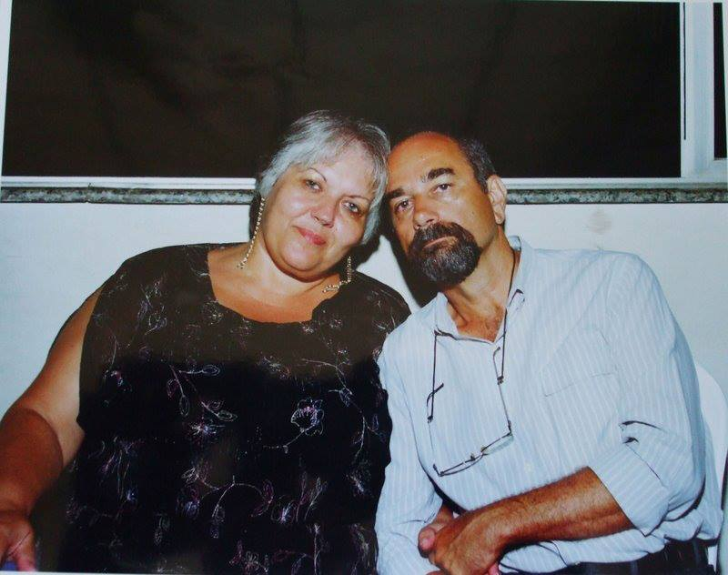

Sobre a Amor de Biscoito
A Amor de Biscoito foi fundada pelo casal Eide e Airton em meados de 2013, depois do Sr Airton perder o emprego. Atuando no mercado alimentício há mais de 3 décadas, Dona Eide, como é mais conhecida, começou vendendo comida congelada em São Paulo-SP, após o nascimento de sua segunda filha e depois de se mudar para Agudos continuou no ramo, mas desta vez vendendo salgadinhos e mini pizzas congelados, mas nossos biscoitos já são sucesso desde o começo lá em São Paulo.
Nossos Biscoitos
Nossos biscoitos são amanteigados, feitos com ingredientes de primeira qualidade, crocantes e deliciosos. Feitos artesanalmente com todo capricho e carinho.
São uma ótima pedida para datas temáticas como natal, páscoa, dia das mães, dia dos namorados e até mesmo como lembrancinhas para casamento, aniversário, festas corporativas ou ainda para o seu próprio deleite no dia a dia.
Localização
Estamos localizados na pequena cidade de Agudos no interior paulista, a aproximadamente 300km da capital, conhecida como a terra da cerveja por possuir uma das melhores águas do pais para a produção da bebida. E sabe o que vai muito bem com uma cervejinha bem gelada? Nossos biscoitos é claro!